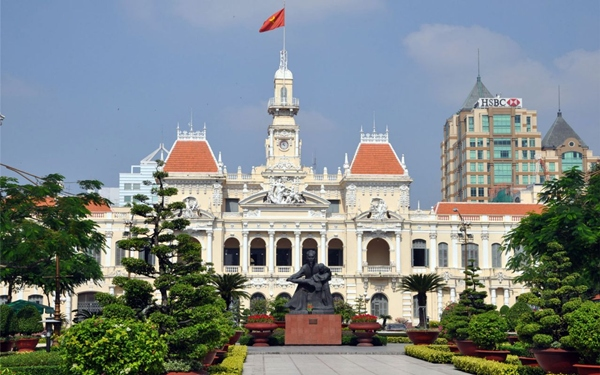

-

首相指示第16号に基づく厳格な社会隔離措置が講じられていたベトナム東南部地方バリア・ブンタウ省では9月23日（木）から一部地域を除いて社会隔離措置が緩和され、経済活動を再開した。
9月22日（水）夜にバリア・ブンタウ省人民委員会のチャン・ヴァン・トゥアン（Tran Van Tuan）副委員長は省内の社会的隔離措置の緩和に関する決定を公布し、23日午前0時から社会隔離を緩和し、首相指示第15号に基づく社会隔離措置を適用することを発表した。
感染症例が依然として確認されている10の地区とロンディエン（Long Dien）郡では、首相指示第16号に基づく社会隔離措置が継続される。
コンダオ（Con Dao）郡では活動が緩和されるが、旅客輸送車両の出入りは許可されない。
-
問い合わせ


-

ベトナム：感染者3513人、前日から999人減 10日発表
-
バリア・ブンタウ省：社会隔離を緩和、経済活動再開へ
-

ブンタウロードトリップ〜ホーチミンから2時間で海へ行こう！〜
-

移動緩和は他省と調整、ホーチミン副市長
-

ＨＣＭ市、配達員のコロナ検査頻度緩めず